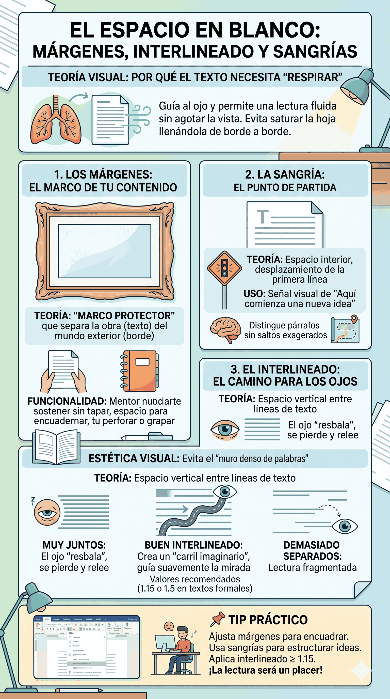

El "Espacio en Blanco": Márgenes, Interlineado y Sangrías
Descubre la teoría visual detrás de por qué un texto necesita "respirar" y cómo evitar el error de saturar la hoja.

1. Los Márgenes: El marco de tu contenido
Imagina tu documento como un cuadro en un museo. Los márgenes son ese marco protector que separa la obra (tu texto) del mundo exterior (el borde del papel).
Teóricamente, los márgenes cumplen dos funciones vitales:
- Funcionalidad: Permiten sostener el documento impreso con las manos sin tapar el texto, y dejan espacio suficiente para encuadernar, perforar o grapar la hoja.
- Estética visual: Evitan que el lector se sienta "ahogado" al ver un muro denso de palabras apenas abre el documento.
2. La Sangría: El punto de partida
A diferencia del margen, que afecta a toda la página, la sangría es un espacio interior. Es un pequeño desplazamiento hacia la derecha que se aplica generalmente en la primera línea de un párrafo.
¿Por qué lo usamos? Visualmente, la sangría funciona como una señal de tráfico que le dice al cerebro del lector: "Aquí comienza una nueva idea". Ayuda a distinguir claramente dónde termina un párrafo y dónde empieza el siguiente sin tener que dejar saltos de línea exagerados.
3. El Interlineado: El camino para los ojos
El interlineado es el espacio vertical que existe entre una línea de texto y la siguiente.
Si las líneas están muy juntas, el ojo del lector "resbala" y es muy fácil perderse y volver a leer la misma línea dos veces. Si están demasiado separadas, la lectura se siente fragmentada y desconectada. Un buen interlineado (como 1.15 o 1.5 en textos formales) crea un "carril" imaginario que guía suavemente la mirada desde el final de una línea hasta el inicio de la siguiente.